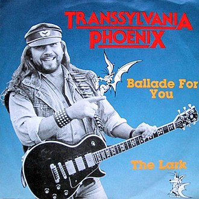

Band Description
Phoenix After gaining popularity in Romania during the so-called British invasion in
the mid-60s, the group changed its style to integrate Romanian folklore elements after vocalist Florin
"Moni" Bordeianu emigrated to the United States. A new LP was released in 1972 and the band represented
Romania in various Eastern Bloc music festivals throughout the 1970s. The group disbanded in 1977,
when they illegally fled to West Germany. Latter attempts to regroup the members, both in West Germany
and in Romania after 1990, failed to achieve the original success. They have been estimated to have sold
over 2 million albums in Romania
Members:
Phoenix-Andrii Popa (Audio)
Best Albums
| Album Cover | Most Popular Song |
|---|---|
|
|
|
|

|
|
|
|
|
|
|

|